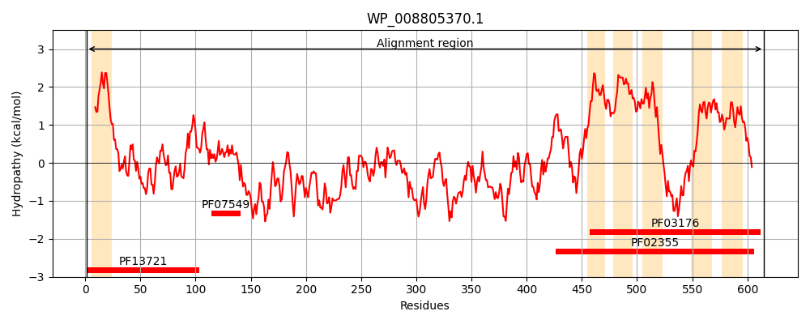
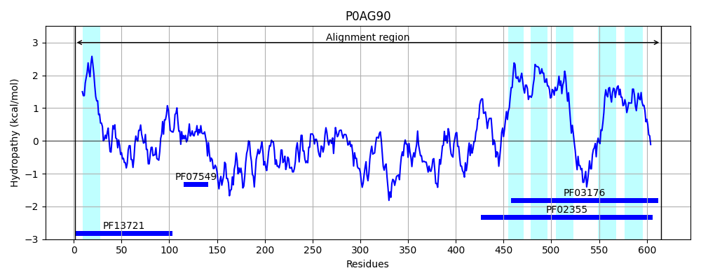
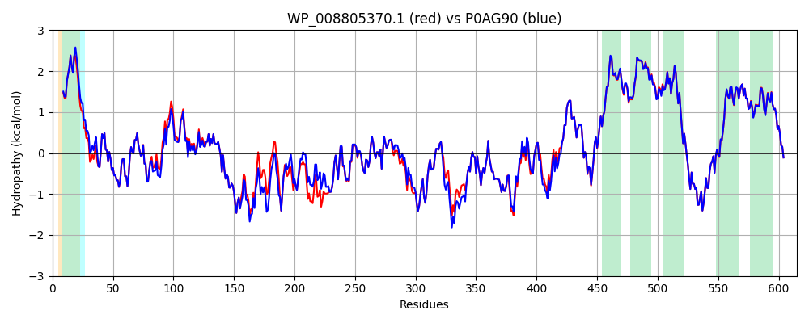

Hit Accession: P0AG90
Hit TCID: 2.A.6.4.1
Hit Description: gnl|BL_ORD_ID|8852 gnl|TC-DB|P0AG90|2.A.6.4.1 Protein-export membrane protein secD - Escherichia coli.
Mach Len: 615
e:0.000000
Query TMS Count : 6
Hit TMS Count: 6
TMS-Overlap Score: 5.550000
Predicted Substrates:CHEBI:5584;hydron, CHEBI:8526;protein polypeptide chain
BLAST Alignment:
Score: 2872 , Bit scores: 1110 bits, E-value: 0.0e+00, Alignment length: 615, Percentage identity: 93
Query: 1 MLNRYPLWKYVMLVVVIVVGLIYALPNLYGEDPAVQITGARGVAASEQTLIQVQKTLQEEKITAKSVALEEGAILARFDTTDTQLRAREALLTVLGDKYVVALNLAPATPRWLAALYAEPMKLGLDLRGGVHFLMEVDMDTALGKLQEQNIDSLRSELRDKGIPYATVRKEDNYGLSIVFRDSAARDQAISYLSPRHRDLVISSQGDNSLKAVMTDERLKEAREYAVQQNINILRNRVNQLGVAEPLVQRQGADRIVVELPGIQDTARAKEILGATATLEFRLVNTNVDQSAAASGRVPGDSEVKETREGQPVVLYKRVILTGDHITDSTSSMDEYNQPQVNISLDSAGGNIMSNFTKDNIGKPMATLFVEYKDSGKKDANGRAILAKEEEVINIANIQSRLGNSFRITGISNPNEARQLSLLLRAGALIAPIQIVEERTIGPTLGMQNIKQGLEACLAGLVVSILFMILFYKKFGLIATSALIANLVLIVGIMSLIPGATLTMPGIAGIVLTLAVAVDANVLINERIKEELSNGRTVQQAIDEGYRGAFSSIFDANVTTLIKVIILYAVGTGAIKGFAITTGIGIATSMFTAIVGTRAIVNLLYGGKRVKKLSI 615
MLNRYPLWKYVML+VVIV+GL+YALPNL+GEDPAVQITGARGVAASEQTLIQVQKTLQEEKITAKSVALEEGAILARFD+TDTQLRAREAL+ V+GDKYVVALNLAPATPRWLAA++AEPMKLGLDLRGGVHFLMEVDMDTALGKLQEQNIDSLRS+LR+KGIPY TVRKE+NYGLSI FRD+ ARD+AI+YLS RH DLVISSQG N L+AVM+D RL EAREYAVQQNINILRNRVNQLGVAEP+VQRQGADRIVVELPGIQDTARAKEILGATATLEFRLVNTNVDQ+AAASGRVPGDSEVK+TREGQPVVLYKRVILTGDHITDSTSS DEYNQPQVNISLDSAGGNIMSNFTKDNIGKPMATLFVEYKDSGKKDANGRA+L K+EEVINIANIQSRLGNSFRITGI+NPNEARQLSLLLRAGALIAPIQIVEERTIGPTLGMQNI+QGLEACLAGL+VSILFMI+FYKKFGLIATSALIANL+LIVGIMSL+PGATL+MPGIAGIVLTLAVAVDANVLINERIKEELSNGRTVQQAIDEGYRGAFSSIFDAN+TTLIKVIILYAVGTGAIKGFAITTGIG+ATSMFTAIVGTRAIVNLLYGGKRVKKLSI
Sbjct: 1 MLNRYPLWKYVMLIVVIVIGLLYALPNLFGEDPAVQITGARGVAASEQTLIQVQKTLQEEKITAKSVALEEGAILARFDSTDTQLRAREALMGVMGDKYVVALNLAPATPRWLAAIHAEPMKLGLDLRGGVHFLMEVDMDTALGKLQEQNIDSLRSDLREKGIPYTTVRKENNYGLSITFRDAKARDEAIAYLSKRHPDLVISSQGSNQLRAVMSDARLSEAREYAVQQNINILRNRVNQLGVAEPVVQRQGADRIVVELPGIQDTARAKEILGATATLEFRLVNTNVDQAAAASGRVPGDSEVKQTREGQPVVLYKRVILTGDHITDSTSSQDEYNQPQVNISLDSAGGNIMSNFTKDNIGKPMATLFVEYKDSGKKDANGRAVLVKQEEVINIANIQSRLGNSFRITGINNPNEARQLSLLLRAGALIAPIQIVEERTIGPTLGMQNIEQGLEACLAGLLVSILFMIIFYKKFGLIATSALIANLILIVGIMSLLPGATLSMPGIAGIVLTLAVAVDANVLINERIKEELSNGRTVQQAIDEGYRGAFSSIFDANITTLIKVIILYAVGTGAIKGFAITTGIGVATSMFTAIVGTRAIVNLLYGGKRVKKLSI 615 | Protein Hydropathy Plots: |
|---|
|  |  |
Pairwise Alignment-Hydropathy Plot:
|
|---|
|  |